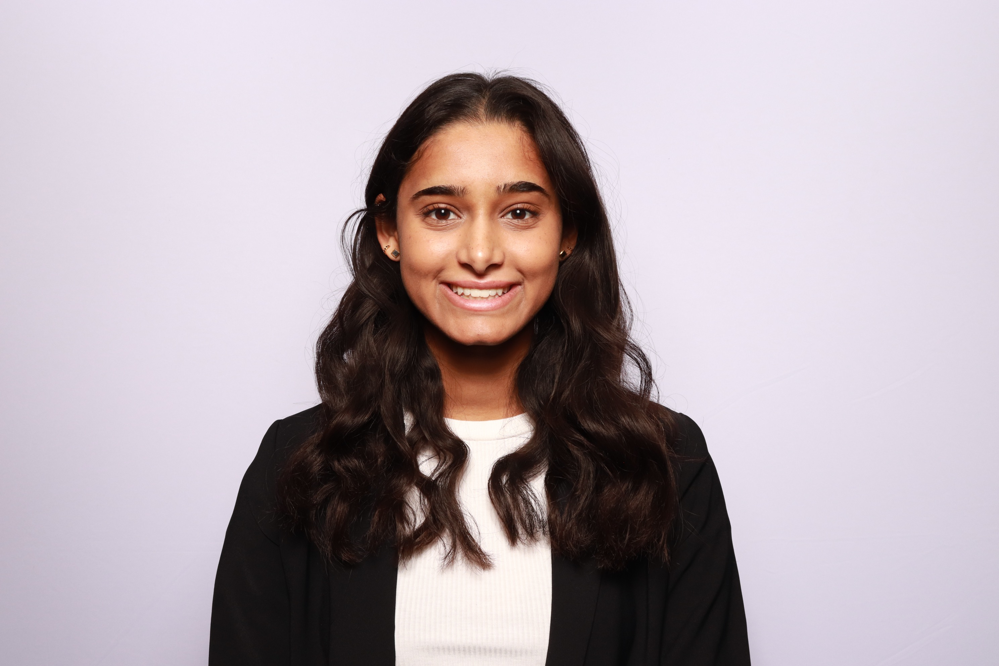

Introduction
Hi there! My name is Nidhi Hosamane, and this is my website dedicated to my experiences, interests, hobbies, and more! I hope that you enjoy exploring the site and learning more about me!
My Experiences
I am a current fourth-year student studying data science and health science with a minor in computational social sciences. Some of my favorite classes that I have taken during the past 4 years include Machine Learning and Data Mining, Foundations of Biostatistics, Big Data for Cities, and Healthcare Policy and Administration! I am excited to see what classes I will be taking during my next semester. I will be graduating from Northeastern University in the Spring of 2025 with a Bachelor of Science!
During the past few years, I have had the opportunity to work at a few different places, allowing me to learn about what I am passionate in and what I may want to pursue as a career after graduation. These companies include Lyndra, Massachusetts General Hospital, Biogen, and even Northeastern University. At these experiences, I learned a lot about various techinal and soft skills that will be invaluable to me in the future.
My Interests/Hobbies
My interests and hobbies include teaching myself how to play guitar & piano, generative AI & prompt engineering, cooking, running, listening to podcasts, and reading. If you're interested in some of the recent books and podcasts that I have recently read or listened to, check out the Recommendations tab!
Contact Information
- Email: hosamane.n@northeastern.edu
- LinkedIn: http://www.linkedin.com/in/nidhihosamane